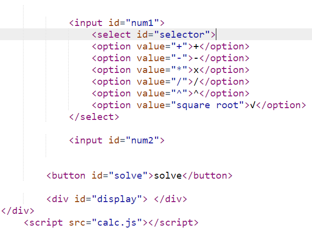
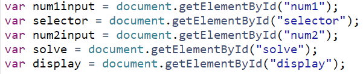
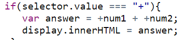
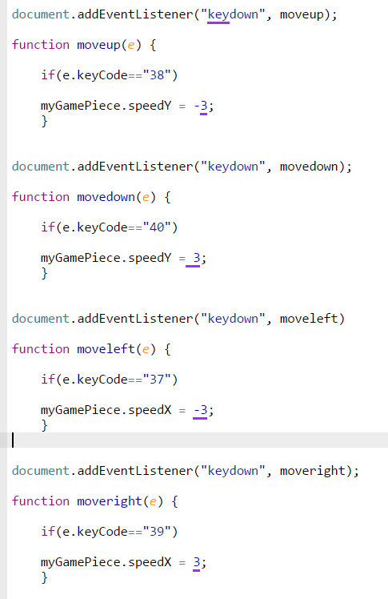

The first thing I did was set up the navigation bar and set a background image for the page. I also set where each link on the nav bar would send the user. You can see the code for the nav bar and background image in the image below. The list is structured using a <ul> element which stands for unordered list. Each item was added to the list using <li> which stands for list item. I used some classes that are stored on the same html page under a style element (this will be explained more further down the page), however I did use .css to adjust a few minor aspects of the navbar and how it is styled. An image of the .css styling is located below this description.


After setting up the nav bar, I then started to implement what would be featured on the page. The goal of the page was to provide a picture and description of various computer components. The first component I did was the CPU and you can see the code for both the description and image in the image below.

As you saw above, all of the elements above were accompanied by classes. Through these classes I was able to change the look of the text. You can see the code for the classes in the image below.

To finish the page, I added the rest of the hardware to the page and modified the text and images the same way I did in the second step above.
Above is a basic calculator made using basic HTML and Javascript, in this page I will be explaining how the HTML and the Javascript work together to make this calculator work.
Above is the base HTML code of the calculator. This creates the two input boxes, the operation selection menu, the solve button, as well as the location where the answer is displayed. At the bottom, you can see <script src="calc.js">, this line of code links the javascript code to the HTML.
The code above are the variables. These lines of code tell the HTML what to do.
This code is what makes the actual math operations work. The code in the image above is for the addition operation. There are 5 other chunks of code similar to this one for the other 5 operations.
For this project I worked with my peer Jaime in order to change aspects of a tutorial for a javascript game. The aspect I worked on changing was changing the controls of the game from on screen buttons to the arrow keys on the keyboard. The code can be seen below.
To map the controls to the arrow keys I used event listeners. What these strings of code do is listen for specific things to happen. In order for the code to listen for the arrow keys I set it so that they would be activated by the key's code. For the up arrow code, it was set to be activated once it "heard" 38 which is the code for the up arrow key. The next step was to set up the actions. Now that the code was listening for the keys to be pressed it had to execute something. The event was changing the movement of the game piece. This is where the code myGamepiece.speedx or y comes in. Once any of the arrow keys are pressed, the code sets the game piece to move at a certain speed in the direction of the arrow key